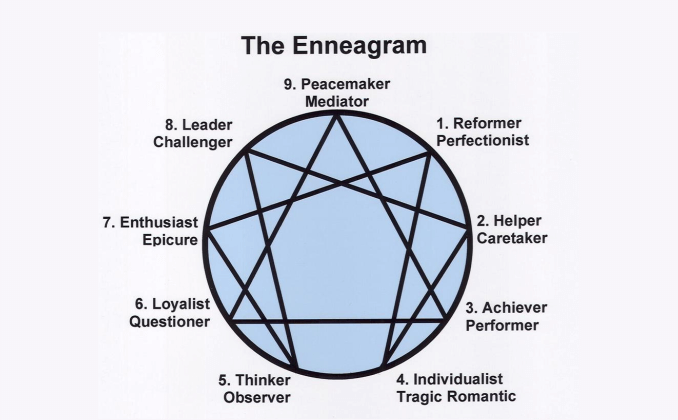

Q.Y. LQ.Y. L
Q.Y. LQ.Y. LBeing a member of Asians Supporting Tino Rangatiratanga (ASTR) I am very invested in de-colonization/re-powerment, more specific to this context is the need to address migrant complicities that continues to reproduce colonial injustice. I love the House Party analogy which really illustrates the position of migrants of colour in Aotearoa:
Imagine you have been invited to be party by some friends, but when you got to the party, you realised that it is not actually their house. People at the party were having a great time and trashing the house. You turned around and see the house owners cleaning up after the partiers and trying get everything under control again. Now there are three things you can do, first, join the party and join the fun; second, walk away as this isn't really your problem; and finally, join the owners in cleaning up the mess that is already made and that is continuously growing.
What would you choose to do? For me, this mahi is about implicating migrants of colour, for whom Pākeha institutions are the only entry point into the Aotearoa landscape.

I am a Enneagram type 7, called the Enthusiast. This type is categorised by a never-ending pursuit for joy and happiness, this sounds like everyone. But for the type 7, this obsessive pursuit for joy manifests into the inability to be in the present. Life is lived in the vision of maximising future joy, rather than being fully integrated into the present experience. I resonate with this description a lot, and recognise my own escapist tendencies. Looking my big stack of unfinished projects and unrealised ideas, it is clear that in the pursuit of the next exciting idea I would easily abandon what I am working on. Overcoming this means getting better at the daily grind to me.
